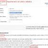

În oraşul Iaşi, la recensământul etilic 2011, au fost număraţi doar 295 de mii de oameni, notează Agentia.org. Cum adică “doar”? Adică noi, autorităţile, ştim că de fapt sunt mai mulţi. Păi de unde ştim, nu fix ăsta era rolul recensământului, să numărăm capete de locuitori? Dacă 295 de mii au ieşit, înseamnă că atâţia [...]

“Cine nu are bătrâni să îşi cumpere”. Ii găseşte la preţ de dumping oriunde există mai mult de cinci oameni organizaţi sub formă de coadă sau meleu. Nu e vorba despre bunicuţi, model Barbu Ştefănescu Delavrancea, care se plimbă prin Cişmigiu şi împart nepoţilor bomboane cu gust de portocală şi nici despre bunicuţe făcătoare de [...]

Pe vremuri îi găseam doar în Cişmigiu jucând table şi făcând selecţia echipei naţionale de fotbal. Sau prin cârciumi golind pahare şi umplând agenda diplomaţiei internaţionale. Acum dăm peste ei pe forumuri, bloguri, uneori chiar în ziare şi emisiuni televizate. Sunt comentatorii prin excelenţă, oamenii care nu au curiozităţi, ci doar certitudini. De la aroma [...]
Zoso zice azi că iditoţii care iau bani ca să scrie la gazetele online sunt plătiţi prost, adică mai mult decât merită. Aşa e. Dar oare dacă publicul ar fi mai breaz, am mai avea aşa ceva? Primul comentariu care sesizează brambureala cifrelor în articolul din Capital la care se referea zoso e apărut fix azi, la o săptămână [...]

După ce a investit în titluri de stat şi obligaţiuni, BCR s-a decis să schimbe macazul şi să reprofileze radical, optând pentru a investi fix în nevoile clientului. Cel puţin aşa ne anunţă Bankingnews.ro. Nu ni se spune dacă e vorba despre „dovezi solide”, ca în reclama Pedigree, sau despre varianta lor complementară, treaba mai [...]

Internetul consumă mai puţin de 2% din energia electrică mondială, adică între 170 GW şi 306 GW (GigaWaţi) dintr-un total de 16 TW (TeraWaţi), luând în calcul inclusiv energia consumată pentru producerea componentelor constituente. În lume există un număr total de 750 de milioane de laptopuri, un miliard de smart phone-uri şi 100 de milioane [...]

Cercetătorii de la Battelle, cea mai mare organizaţie independentă non-profit, au lansat Anomalator, soft destinat detectării premature a fraudelor financiare. Licenţa acestei tehnologii a fost oferită companiei de servicii financiare V-Indicator Analytics. Programul a reuşit, doar comparând activitatea a sute de fonduri de investiţii, să indice faptul că randamentele raportate de vehiculele investiţionale ale lui [...]
Vergil Voineagu, şeful Institutului Naţional de Statistică (INS), organizatorul Recensământului 2011 împleticit, demonstrează că şi atunci când e beat mangă, tot la binele public se gândeşte. Dialogul telefonic din emisiunea difuzată la România TV începe cam aşa: – Hâc, ‘nă seara, da’ când mi-aţi dat mesajul nu eram în rază! şi continuă după cum puteţi [...]
Synovate angajează “transcriptori”. Ce-o fi un “transcriptor”? Sigur, e cel care se ocupă cu „transcriptarea” la Synovate, atunci când nu e ocupat să-şi alfabetizeze angajatorul. Dacă doar ar fi transcris, ar fi fost un simplu transcriitor, adică un individ lipsit de importanţa pe care un job cu rezonanţă americană îl are pentru corporatistul dâmboviţean. Un [...]

Actorul Grig Chiroiu Pupăză (cei trăsniţi de un anumit gen de umor ştiu despre cine vorbesc) scoate pe gură următoarea aserţiune: „Cronica Cârcotaşilor e unică şi singulară”. Adică originală şi de la mama ei. Singura şi numai una. Dacă era textul unei manele, declaraţia pleonastică ar fi fost potrivită. Sau dacă era replica din bancul [...]

Proprietarul de pensiune Mihai Găinuşă zice, referindu-se la specialistul în alunecări (pe schiuri sau cu Mercedesul) Şerban Huidu: „Sunt mii de perfecţi în lumea asta, din păcate anonimi” (conform Adevărul). Corect, dar dintre miile alea de „perfecţi”, puţini sunt şi ucigaşi. Poate asta îi şi ajută să rămână anonimi. Şi aici nu mai e „din [...]

Aripa Sebastian Ghiţă din trustul falimentar Realitatea Media SA are deja site, siglă şi slogan. Aproape nou nouţe. RTV.net e adresa noului site Realitatea, care declară, sincer, fix aşa: “Noi facem realitatea”. Premieră pentru presa românească. Oamenii încă plini de Elan (fie el şi Schwartzenberg) au rămas la încercarea de a „deschide lumea”. Schema cu [...]